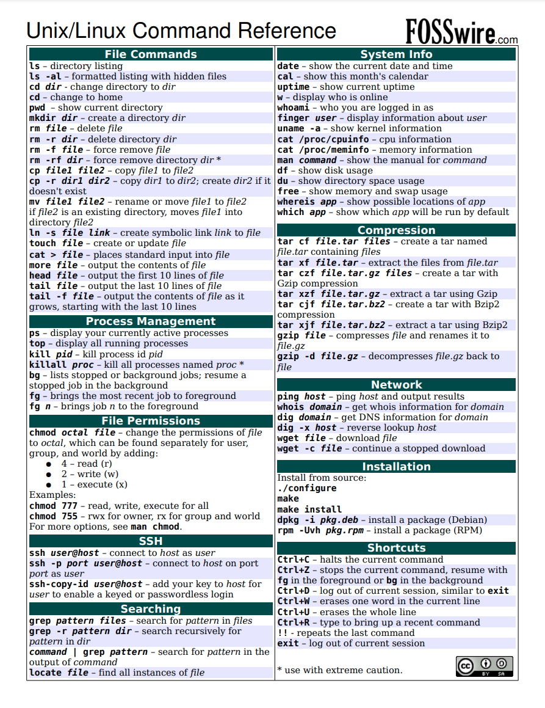

Linux常用命令

引言
掌握Linux命令行是机器人开发的基础技能。无论是远程管理机器人系统、调试ROS节点还是处理传感器数据，都需要熟练使用Linux命令。本页面整理了机器人开发中最常用的Linux命令，按功能分类介绍。
文件与目录操作
文件和目录管理是最基础的命令行操作。
| 命令 | 功能 | 常用示例 |
|---|---|---|
ls |
列出目录内容 | ls -la（显示详细信息和隐藏文件） |
cd |
切换目录 | cd /home/user/catkin_ws/src |
pwd |
显示当前工作目录 | pwd |
mkdir |
创建目录 | mkdir -p catkin_ws/src（递归创建） |
cp |
复制文件或目录 | cp -r src/ backup/（递归复制目录） |
mv |
移动或重命名文件 | mv old_name.py new_name.py |
rm |
删除文件或目录 | rm -rf build/（递归强制删除） |
ln |
创建链接 | ln -s /opt/ros/noetic/setup.bash setup.bash（符号链接） |
find |
按条件查找文件 | find . -name "*.launch" -type f |
tree |
以树形结构显示目录 | tree -L 2 src/（显示两层深度） |
文件内容查看与搜索
查看和搜索文件内容是调试和分析的关键操作。
| 命令 | 功能 | 常用示例 |
|---|---|---|
cat |
显示文件全部内容 | cat package.xml |
less |
分页查看文件 | less /var/log/syslog（支持上下翻页） |
head |
显示文件开头部分 | head -n 20 config.yaml（显示前20行） |
tail |
显示文件末尾部分 | tail -f /var/log/syslog（实时跟踪日志） |
grep |
按模式搜索文本 | grep -rn "topic_name" src/（递归搜索并显示行号） |
wc |
统计行数、单词数和字节数 | wc -l CMakeLists.txt（统计行数） |
diff |
比较两个文件的差异 | diff config_old.yaml config_new.yaml |
文件权限管理
Linux的权限系统对机器人设备访问（如串口、USB设备）尤为重要。
| 命令 | 功能 | 常用示例 |
|---|---|---|
chmod |
修改文件权限 | chmod +x script.py（添加执行权限） |
chown |
修改文件所有者 | chown user:user file.txt |
chgrp |
修改文件所属组 | chgrp dialout /dev/ttyUSB0 |
在机器人开发中，经常需要设置串口设备的权限。例如，访问串口设备通常需要将用户添加到dialout组：
sudo usermod -aG dialout $USER
进程管理
监控和管理进程对于调试机器人系统至关重要。
| 命令 | 功能 | 常用示例 |
|---|---|---|
ps |
显示当前进程 | ps aux（显示所有进程的详细信息） |
top |
实时显示系统资源使用 | top（按q退出） |
htop |
增强版进程监控工具 | htop（交互式界面，支持鼠标操作） |
kill |
终止进程 | kill -9 <PID>（强制终止指定进程） |
killall |
按名称终止进程 | killall roscore（终止所有roscore进程） |
nohup |
使进程在终端关闭后继续运行 | nohup roslaunch my_pkg my_launch.launch & |
screen |
终端复用器 | screen -S ros（创建名为ros的会话） |
tmux |
终端复用器 | tmux new -s robot（创建名为robot的会话） |
网络工具
网络工具在远程操作机器人和调试通信问题时不可或缺。
| 命令 | 功能 | 常用示例 |
|---|---|---|
ifconfig / ip |
查看和配置网络接口 | ip addr show（显示所有网络接口） |
ping |
测试网络连通性 | ping 192.168.1.100（测试与机器人的连接） |
ssh |
远程登录 | ssh user@robot-hostname（远程连接机器人） |
scp |
安全复制文件 | scp file.bag user@robot:/home/user/（传输文件到机器人） |
rsync |
高效同步文件 | rsync -avz src/ user@robot:~/catkin_ws/src/（同步代码） |
netstat / ss |
查看网络连接状态 | ss -tlnp（显示监听端口） |
curl |
传输数据 | curl http://localhost:11311（测试ROS Master是否运行） |
wget |
下载文件 | wget https://example.com/model.tar.gz |
包管理 (apt)
Ubuntu/Debian系统使用apt包管理器，也是安装ROS的主要途径。
| 命令 | 功能 | 常用示例 |
|---|---|---|
apt update |
更新软件包索引 | sudo apt update |
apt install |
安装软件包 | sudo apt install ros-noetic-desktop-full |
apt upgrade |
升级所有已安装的包 | sudo apt upgrade |
apt remove |
卸载软件包 | sudo apt remove package_name |
apt search |
搜索软件包 | apt search ros-noetic |
apt list |
列出软件包 | apt list --installed（列出已安装的包） |
dpkg |
底层包管理工具 | dpkg -l \| grep ros（查看已安装的ROS包） |
磁盘与存储
管理磁盘空间在处理大量传感器数据（如rosbag录制的数据）时尤为重要。
| 命令 | 功能 | 常用示例 |
|---|---|---|
df |
显示磁盘空间使用情况 | df -h（以易读格式显示） |
du |
显示目录或文件大小 | du -sh ~/bagfiles/（查看rosbag目录大小） |
mount |
挂载文件系统 | mount /dev/sdb1 /mnt/usb（挂载USB设备） |
umount |
卸载文件系统 | umount /mnt/usb |
lsblk |
列出块设备 | lsblk（查看所有磁盘和分区） |
文本处理
文本处理工具在分析日志文件和处理配置文件时非常有用。
| 命令 | 功能 | 常用示例 |
|---|---|---|
awk |
文本处理与数据提取 | awk '{print $1, $3}' data.txt（提取第1和第3列） |
sed |
流编辑器 | sed -i 's/old_param/new_param/g' config.yaml（批量替换） |
sort |
排序 | sort -n -k2 data.txt（按第2列数字排序） |
uniq |
去除重复行 | sort file.txt \| uniq（排序后去重） |
cut |
按列截取 | cut -d',' -f1,3 data.csv（提取CSV的第1和第3列） |
xargs |
构建并执行命令 | find . -name "*.pyc" \| xargs rm（删除所有.pyc文件） |
压缩与解压
传输和备份机器人数据时经常需要压缩和解压操作。
| 命令 | 功能 | 常用示例 |
|---|---|---|
tar |
打包和解包 | tar -czvf archive.tar.gz folder/（压缩目录） |
tar |
解压tar.gz | tar -xzvf archive.tar.gz（解压） |
zip |
创建zip压缩包 | zip -r archive.zip folder/ |
unzip |
解压zip文件 | unzip archive.zip |
gzip |
压缩单个文件 | gzip large_file.bag（压缩rosbag文件） |
系统信息
了解系统状态对于优化机器人性能至关重要。
| 命令 | 功能 | 常用示例 |
|---|---|---|
uname |
显示系统信息 | uname -a（显示全部系统信息） |
lscpu |
显示CPU信息 | lscpu |
free |
显示内存使用情况 | free -h（以易读格式显示） |
dmesg |
查看内核日志 | dmesg \| tail -20（查看最近的内核消息） |
lsusb |
列出USB设备 | lsusb（查看连接的传感器和设备） |
lspci |
列出PCI设备 | lspci（查看GPU等设备） |
ROS相关命令
以下命令专用于ROS开发，需要先安装ROS才能使用。
ROS 1常用命令
| 命令 | 功能 | 常用示例 |
|---|---|---|
roscore |
启动ROS Master | roscore |
rosrun |
运行单个节点 | rosrun turtlesim turtlesim_node |
roslaunch |
启动launch文件 | roslaunch my_pkg my_launch.launch |
rostopic |
话题操作 | rostopic list、rostopic echo /cmd_vel |
rosservice |
服务操作 | rosservice list、rosservice call /service_name |
rosnode |
节点信息 | rosnode list、rosnode info /node_name |
rosparam |
参数操作 | rosparam list、rosparam get /param_name |
rosbag |
数据记录与回放 | rosbag record -a、rosbag play data.bag |
catkin_make |
编译catkin工作空间 | cd ~/catkin_ws && catkin_make |
catkin build |
编译工作空间（catkin_tools） | cd ~/catkin_ws && catkin build |
ROS 2常用命令
| 命令 | 功能 | 常用示例 |
|---|---|---|
ros2 run |
运行单个节点 | ros2 run turtlesim turtlesim_node |
ros2 launch |
启动launch文件 | ros2 launch my_pkg my_launch.py |
ros2 topic |
话题操作 | ros2 topic list、ros2 topic echo /cmd_vel |
ros2 service |
服务操作 | ros2 service list |
ros2 node |
节点信息 | ros2 node list、ros2 node info /node_name |
ros2 param |
参数操作 | ros2 param list |
ros2 bag |
数据记录与回放 | ros2 bag record -a、ros2 bag play data/ |
colcon build |
编译工作空间 | cd ~/ros2_ws && colcon build |
colcon test |
运行测试 | cd ~/ros2_ws && colcon test |
参考资料
- Linux Command Library, Linux Command Library
- The Linux Command Line, William Shotts
- ROS Wiki - Command-line Tools, ROS Wiki
- ROS 2 CLI Tools, ROS 2 Documentation